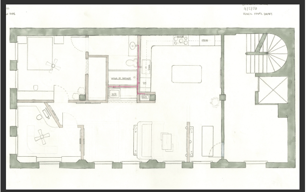
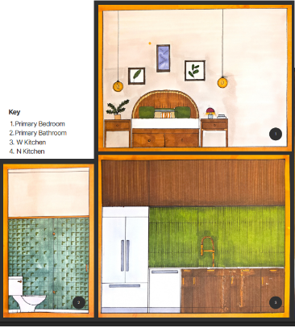
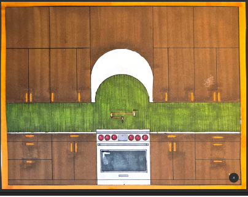

Work / Residential Design
Casa de Luz y Tierra
Creative Dwelling
A home built around a fictional client who paints, cooks and runs, and whose days start early. Through multiple layouts and class feedback, Catalina shaped the kitchen, studio, living and dining spaces and primary suite to support both creativity and everyday life.

Path through the project
Idea
A client who paints, cooks and runs, with a routine built around early mornings.
Iteration
Multiple layouts refined through collaborative class feedback.
Drawing
Floor plan, elevations and additional architectural drawings.
Final
The finished floor plan.
Concept
A home for creativity and everyday life
The fictional client has a passion for painting, cooking and running, and a routine that centers on early mornings.
Catalina's goal was to create a home that supports both creativity and everyday life through thoughtful and functional design.
The design went through multiple iterations and collaborative class feedback, which let Catalina refine layout, spatial relationships, functionality and responsiveness to the client.
- Kitchen
- Primary bedroom
- Primary bathroom
- Studio
- Living room
- Dining space
Process
Iteration


Elevations



